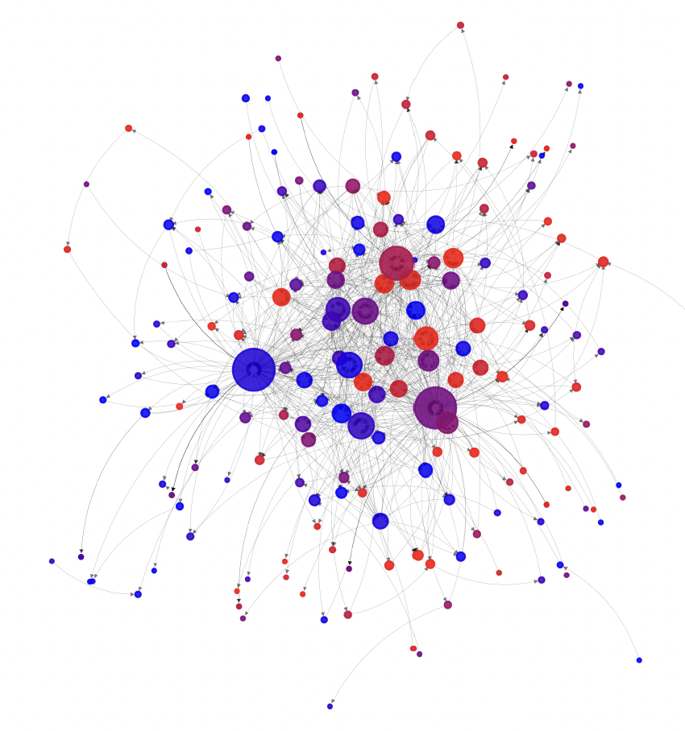

Bayesian modelling of networks

I develop Bayesian nonparametric models for sparse and heterogeneous networks, focusing on completely random measures, power-law degrees, overlapping communities, and networks that evolve over time. Current work includes dynamic, bipartite and covariate-dependent networks.